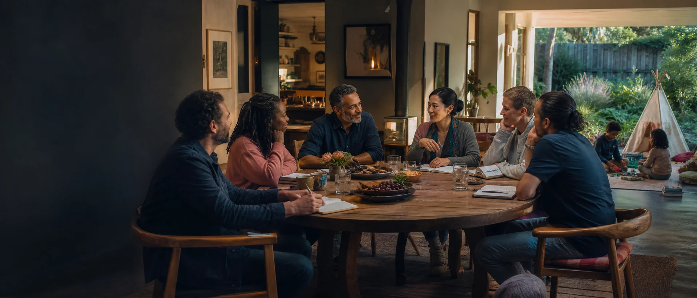

Individual voice
Each adult speaks for their own desires, boundaries, health, friendships, work and conscience.

A strong group marriage is made of whole people. Love deepens when voice, privacy, desire, responsibility and the freedom to change remain alive inside the family.
Concept artwork
Self-sovereignty is not isolation. It is the capacity to meet others as a person with a voice, a body, a history, private interior space and real influence over the life being built together.
Each adult speaks for their own desires, boundaries, health, friendships, work and conscience.
Every bond develops its own language for time, intimacy, disclosure, care and change.
Shared decisions include the people who carry their effects, with clear ways to slow down and think again.
Children are not relationship glue or future labour. Their safety, attachment, development and emerging voice shape family decisions.
A loving family has shared life and private rooms, conversations, friendships, devices, thoughts and moments of solitude.
Consent lives in words, actions, context and the continuing freedom to choose. It is a relationship practice, not a one-time form.
Money, housing, age, health, confidence, migration status, fertility, language and social standing affect how free a choice feels. Intelligent families name those differences and design counterweights.
Independent money, private support networks, written property interests, separate legal advice and realistic exit plans are not signs of weak love. They make chosen interdependence more truthful.
What has changed in the people, relationships, children or wider world?
What does each person actually want, fear, need or no longer consent to?
Which agreement, resource or rhythm needs to change?
What action restores trust, dignity and practical safety?
A relationship may change form while parenting, friendship, housing, property and care continue. Designing transitions early gives the family more graceful options later.
Explore the adult-only Grey Area Commons reflection tools